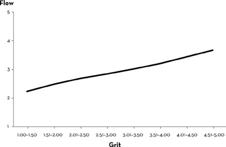

more than 14,000 applicants: For more information on West Point, including its admissions process, see www.usma.edu.
drop out before graduation: Data provided by the United States Military Academy.
“new cadet to Soldier”: “Information for New Cadets and Parents,” United States Military Academy–West Point, 2015, www.usma.edu/parents/SiteAssets/Info-4-New-Cadets_Class-of-19.pdf.
“West Point toughens you”: Ibid.
and who would leave: For more on Jerry’s views about predicting West Point outcomes, see Jerome Kagan, An Argument for Mind (New Haven, CT: Yale University Press, 2006), 49–54.
West Point admissions: For more information on the Whole Candidate Score and its history, see Lawrence M. Hanser and Mustafa Oguz, United States Service Academy Admissions: Selecting for Success at the Military Academy/West Point and as an Officer (Santa Monica, CA: RAND Corporation, 2015).
those with the lowest: Angela L. Duckworth, Christopher Peterson, Michael D. Matthews, and Dennis R. Kelly, “Grit: Perseverance and Passion for Long-term Goals,” Journal of Personality and Social Psychology 92 (2007): 1087–1101.
“I was tired, lonely, frustrated”: Michael D. Matthews, Head Strong: How Psychology Is Revolutionizing War (New York: Oxford University Press, 2014), 16.
“never give up” attitude: Mike Matthews, professor of engineering psychology at the U.S. Military Academy at West Point, in conversation with the author, May 25, 2015.
physical fitness marks: Hanser and Oguz, Selecting for Success.
seventy-one cadets had dropped out: Duckworth et al., “Grit.”
55 percent of the salespeople: Lauren Eskreis-Winkler, Elizabeth P. Shulman, Scott A. Beal, and Angela L. Duckworth, “The Grit Effect: Predicting Retention in the Military, the Workplace, School and Marriage,” Frontiers in Psychology 5 (2014): 1–12.
graduate degree were grittier: Duckworth, et al., “Grit.”
as high as 80 percent: For more information on college dropout rates in the United States, see “Institutional Retention and Graduation Rates for Undergraduate Students,” National Center for Education Statistics, last updated May 2015, http://nces.ed.gov/programs/coe/indicator_cva.asp.
“where we decide”: Dick Couch, Chosen Soldier: The Making of a Special Forces Warrior (New York: Three Rivers Press, 2007), 108.
42 percent of the candidates: Eskreis-Winkler et al., “The Grit Effect.”
Success in the military, business, and education: Ibid. Importantly, the bivariate associations between grit and outcomes were in all cases significant as well.
to all 273 spellers: Duckworth et al., “Grit.”
SAT scores and grit: Ibid. See also Kennon M. Sheldon, Paul E. Jose, Todd B. Kashdan, and Aaron Jarden, “Personality, Effective Goal-Striving, and Enhanced Well-Being: Comparing 10 Candidate Personality Strengths,” Personality and Social Psychology Bulletin 1 (2015), 1–11. In this one-year longitudinal study, grit emerged as a more reliable predictor of goal attainment than any other measured personality strength. Likewise, my colleagues Phil Tetlock and Barbara Mellers have found in their longitudinal research that people who forecast future events with astonishing accuracy are considerably grittier than others: “The strongest predictor of rising into the ranks of superforecasters is perpetual beta, the degree to which one is committed to belief updating and self-improvement. It is roughly three times as powerful a predictor as its closest rival, intelligence.” See Philip E. Tetlock and Dan Gardner, Superforecasting: The Art and Science of Prediction (New York: Crown, 2015), page 192.
in the classroom: The school I taught at was created by Teach For America alumnus Daniel Oscar, and in my view, the best teacher in the school was a guy named Neil Dorosin. Both Daniel and Neil are still in the vanguard of education reform.
“I was a little behind”: David Luong, in an interview with the author, May 8, 2015.
learning came easy: Karl Pearson, The Life, Letters and Labours of Francis Galton, vol. 1 (Cambridge, UK: Cambridge University Press, 1930), 66.
“capacity for hard labor”: Francis Galton, Hereditary Genius (London: Macmillan, 1869), 38. It’s important to note here that Galton’s fascination with heredity was misguided. While his conclusions about the importance of zeal and hard work and ability have been supported by modern research, his erroneous conclusions about heredity and race have not.
“eminently important difference”: Charles Darwin, Letter to Francis Galton, December 23, 1869. Frederick Burkhardt et al., ed., The Correspondence of Charles Darwin, vol. 17, 1869 (Cambridge, UK: Cambridge University Press, 2009), 530.
supernatural intelligence: See Leonard Mlodinow, The Upright Thinkers: The Human Journey from Living in Trees to Understanding the Cosmos (New York: Pantheon Books, 2015), 195. Catharine Morris Cox, “The Early Mental Traits of Three Hundred Geniuses,” in Genetic Studies of Genius, vol. 2, ed. Lewis M. Terman, (Stanford, CA: Stanford University Press, 1926), 399.
“no great quickness”: Charles Darwin, The Autobiography of Charles Darwin (London: Collins Clear-Type Press, 1958), 140–41.
data presented itself: Adam S. Wilkins, “Charles Darwin: Genius or Plodder?” Genetics 183 (2009): 773–77.
“The Energies of Men”: William James, “The Energies of Men,” Science 25 (1907): 321–32.
that our talents vary: Talents are, of course, plural. For interested readers, see Howard Gardner, Frames of Mind: The Theory of Multiple Intelligences (New York: Basic Books, 1983). Also, Ellen Winner, Gifted Children: Myths and Realities (New York: Basic Books, 1996). Robert J. Sternberg and James C. Kaufman, “Human Abilities,” Annual Review of Psychology 49 (1998): 479–502.
twice as likely to single out effort: Survey of America’s Inner Financial Life, Worth Magazine, November 1993.
about athletic ability: “CBS News Poll: Does Practice Make Perfect in Sports?,” CBS News website, April 6, 2014, www.cbsnews.com/news/cbs-news-poll-does-practice-make-perfect-in-sports.
endorse “intelligence”: The 60 Minutes/Vanity Fair Poll, Vanity Fair, January 2010.
more likely to succeed: Chia-Jung Tsay and Mahzarin R. Banaji, “Naturals and Strivers: Preferences and Beliefs About Sources of Achievement,” Journal of Experimental Social Psychology 47 (2011): 460–65.
naturals were rated higher: Chia-Jung Tsay, “Privileging Naturals Over Strivers: The Costs of the Naturalness Bias,” Personality and Social Psychology Bulletin (2015).
favor the natural: Ibid.
“technical skills can flourish”: “Juilliard Pre-College,” The Juilliard School, accessed August 10, 2015, http://www.juilliard.edu/youth-adult-programs/juilliard-pre-college
a self-fulfilling prophecy: Robert Rosenthal, “Pygmalion Effect,” in The Corsini Encyclopedia of Psychology, ed. Irving B. Weiner and W. Edward Craighead (Hoboken, NJ: John Wiley & Sons, Inc., 2010), 1398–99.
“I wanted to get better”: Chia-Jung Tsay, assistant professor at the University College London School of Management, in an interview with the author, April 8, 2015.
“The War for Talent”: Elizabeth Chambers et al., “The War for Talent,” McKinsey Quarterly 3 (1998): 44–57.
became a best-selling book: Ed Michaels, Helen Handfield-Jones, and Beth Axelrod, The War for Talent (Boston: Harvard Business School Press, 2001).
“What do we mean by talent?”: Ibid., xii.
“like comparing SAT scores”: John Huey, “How McKinsey Does It,” Fortune, November 1993: 56–81.
on being “bright”: Ibid., 56.
The War on Common Sense: Duff McDonald, “McKinsey’s Dirty War: Bogus ‘War for Talent’ Was Self-Serving (and Failed),” New York Observer, November 5, 2013.
Gladwell has also critiqued: Malcolm Gladwell, “The Talent Myth,” New Yorker, July 22, 2002.
largest corporate bankruptcy: Clinton Free, Norman Macintosh, and Mitchell Stein, “Management Controls: The Organizational Fraud Triangle of Leadership, Culture, and Control in Enron,” Ivey Business Journal, July 2007, http://iveybusinessjournal.com/publication/management-controls-the-organizational-fraud-triangle-of-leadership-culture-and-control-in-enron/.
firing the bottom 15 percent: Ibid.
“always a step or two behind”: Scott Barry Kaufman, director of the Imagination Institute, in an interview with the author, May 3, 2015. Also see www.scottbarrykaufman.com.
“I was so driven”: Scott Barry Kaufman, “From Evaluation to Inspiration: Scott Barry Kaufman at TEDxManhattanBeach,” YouTube video, posted January 6, 2014, https://youtu.be/HQ6fW_GDEpA.
“does achievement trump potential?”: Ibid.
“I had this grit”: Kaufman, interview.
deemed insufficiently bright: I know two other people whose tested aptitude wasn’t particularly prognostic of what they would go on to achieve. The first is Darrin McMahon, an eminent historian at Dartmouth College. In Darrin’s book, Divine Fury: A History of Genius (New York: Basic Books, 2013), he points out that genius incites ambivalence. On one hand, the idea that a few of us stand above the rest by virtue of our God-given gifts holds timeless appeal. On the other hand, we love the idea of equality; we like to think we all have the same chance of succeeding in life. In a recent conversation on this topic, Darrin told me, “What we are seeing play out now is the democratization of genius. Part of us wants to believe that everyone can be a genius.” I was never a very good history student, and sometimes I was a very poor one. So I was more than a little surprised that I couldn’t put Darrin’s book down. It was beautifully written. The meticulous research and careful argumentation somehow did not get in the way of it telling a story. And then, at the very end, on page 243, I got to the acknowledgments: “I have undoubtedly suffered from many delusions in my life—and undoubtedly suffer from many still. But being a genius is not one of them.” Then Darrin says, with humor and affection, that when he was growing up, his parents saw to it that their son “never got too big for his britches.” And even more to the point, he recalls being tested as a child for his school’s gifted program. There were “shapes and pictures and the like,” but the only thing he remembers with certainty is “I didn’t pass.” Darrin remembers watching his classmates “trundle off each week to special classes for the specially endowed.” And then he reflects on whether getting labeled nongifted was, in the end, a blessing or a curse: “At an early age, I was told, with all the objectivity of science, that I was not the recipient of gifts. I might have just thrown in the towel then and there, but I am a stubborn sort, and I spent many years disputing the verdict, working away to prove to myself and to others, dammit, that I had not been slighted at birth.” Similarly, Michael Lomax was not easily identifiable as any kind of prodigy. Nevertheless, he has an illustrious résumé: he is president and CEO of the United Negro College Fund, a leadership position he has held for more than a decade. Before that, Michael was president of Dillard University. He has taught English at Emory University, Spelman College, and Morehouse College and was a two-time mayoral candidate for the city of Atlanta. “Honestly, I wasn’t considered the smartest kid,” Michael told me recently. When he was sixteen, his mother nevertheless wrote to the president of Morehouse College to ask whether her son could be admitted to its prep school. “Of course, there was no prep school at Morehouse!” Michael chuckled. The Morehouse president decided, on the basis of Michael’s outstanding grades, to admit him as a freshman to the college. “I got there. I hated it. I wanted to leave. I was number one in my class, but I wanted to transfer. I got it in my head that I would be a better fit at Williams College, so I applied. I had done everything, and they were about to admit me, and then the director of admissions said, ‘Oh, by the way, we need an SAT score.’ ” Because he’d been admitted to Morehouse without a formal application, Michael had never taken the SAT before. “That test was make-or-break for me. I sat down and took it. And I didn’t do well. Williams didn’t admit me.” So Michael stayed at Morehouse and made the best of it, graduating Phi Beta Kappa with a degree in English. Later, he earned his master’s degree in English from Columbia University, and his PhD in American and African American literature from Emory University. Now sixty-eight years old, Michael told me, “At my age, I think it’s character more than genius. I know all kinds of very talented people who squander their great talents, or who are dissatisfied and unhappy because they think talent is enough. In fact, it ain’t even near enough. What I tell my kids, what I try to tell my grandchildren, and anybody I get a chance to mentor is this: It’s the sweat, it’s the hard work, it’s the persistence, it’s the determination. It is the getting up and dusting yourself off. That’s what it’s all about.” In anticipation of hate mail about this passage on gifted and talented programs, let me say this: I am wholeheartedly in favor of giving kids all the intellectual stimulation they can handle. At the same time, I urge opening those programs to all children who might benefit. Thirty years ago, Benjamin Bloom said it best: “We in this country have come to believe that we can tell who’s going to be a great musician by giving musical aptitude tests, who’s going to be a great mathematician by giving mathematics aptitude tests. Doing that counts some people in and others out far too early. . . . All the children should be given opportunities to explore fields that they might be interested in.” Ronald S. Brandt, “On Talent Development: A Conversation with Benjamin Bloom,” Educational Leadership 43 (1985): 33–35.
“The Mundanity of Excellence”: Daniel F. Chambliss, “The Mundanity of Excellence: An Ethnographic Report on Stratification and Olympic Swimmers,” Sociological Theory 7 (1989): 70–86.
“dozens of small skills”: Ibid., 81.
“You need to jazz it up”: Ibid., 86.
“we have for athletic success”: Ibid., 78.
“distinguishes the best among our athletes”: Ibid, 78.
“It’s easy to do”: Ibid., 79.
“anatomical advantages”: Daniel F. Chambliss, professor of sociology at Hamilton College, in an interview with the author, June 2, 2015.
“how it came to be”: This is an informal translation, Friedrich Nietzsche, Menschliches, Allzumenschliches: Ein Buch für Freie Geister (Leipzig: Alfred Kröner Verlag, 1925), 135.
“out of the ground by magic”: Friedrich Nietzsche, Human, All Too Human: A Book for Free Spirits, trans. R. J. Hollingdale (Cambridge, UK: Cambridge University Press, 1986), 80.
“grows somewhat cool”: Ibid., 86.
“the cult of the genius”: Ibid.
“active in one direction”: Ibid.
“giftedness, inborn talents!”: Ibid.
human flourishing: Marty Seligman lays out the rationale for Positive Psychology in his presidential address to the American Psychological Association, reprinted in American Psychologist 54 (1999): 559–62.
talent is how quickly: The word talent is used differently by different people, but I think the most intuitive definition is the one I’ve offered here. For evidence that individuals do differ in the rate at which they acquire skills, see Paul B. Baltes and Reinhold Kliegl, “Further Testing of Limits of Cognitive Plasticity: Negative Age Differences in a Mnemonic Skill Are Robust,” Developmental Psychology 28 (1992): 121–25. See also Tom Stafford and Michael Dewar, “Tracing the Trajectory of Skill Learning with a Very Large Sample of Online Game Players,” Psychological Science, 25 (2014), 511–18. Finally, see the work of David Hambrick and colleagues on factors other than practice that likely influence skill acquisition; for example, see Brooke N. Macnamara, David Z. Hambrick, and Frederick L. Oswald, “Deliberate Practice and Performance in Music, Games, Sports, Education, and Professions: A Meta-Analysis,” Psychological Science 25 (2014): 1608–18. A critique of this meta-analysis by psychologist Anders Ericsson, whose work we explore in depth in chapter 7, is posted on his website: https://psy.fsu.edu/faculty/ericsson/ericsson.hp.html.
“going to be the renaissance people”: “Oral History Interview with Warren MacKenzie, 2002 October 29,” Archives of American Art, Smithsonian Institution, www.aaa.si.edu/collections/interviews/oral-history-interview-warren-mackenzie-12417.
“our true interest lay”: Ibid.
“40 or 50 pots in a day”: Warren MacKenzie, potter, in an interview with the author, June 16, 2015.
“continue to engage the senses”: Warren MacKenzie, Artist’s Statement, Schaller Gallery, https://www.schallergallery.com/artists/macwa/pdf/MacKenzie-Warren-statement.pdf.
“the most exciting things”: “Oral History,” Archives of American Art.
“in my work today”: Ibid.
“first 10,000 pots are difficult”: Alex Lauer, “Living with Pottery: Warren MacKenzie at 90,” Walker Art Center blog, February 16, 2014, http://blogs.walkerart.org/visualarts/2014/02/16/living-with-pottery-warren-mackenzie-at-90.
“Garp was a natural storyteller”: John Irving, The World According to Garp (New York: Ballantine, 1978), 127.
“the great storyteller”: Peter Matthiessen, quoted in “Life & Times: John Iriving,” New York Times, http://www.nytimes.com/books/97/06/15/lifetimes/irving.html.
Garp “could make things up”: Irving, Garp, 127.
“my lack of talent”: John Irving, The Imaginary Girlfriend: A Memoir (New York: Ballantine, 1996), 10.
SAT verbal score was 475: Sally Shaywitz, Overcoming Dyslexia: A New and Complete Science-based Program for Reading Problems at Any Level (New York: Alfred A. Knopf, 2003), 345–50.
“lazy” and “stupid”: Ibid., 346.
“frequently misspelled words”: Irving, Imaginary Girlfriend, 9.
“slowly—and with my finger”: Shaywitz, Overcoming Dyslexia, 346.
“you have to overextend yourself”: Ibid., 347.
“no matter how difficult it is”: Ibid.
“Rewriting is what I do best”: John Irving, “Author Q&A,” Random House Online Catalogue, 2002.
“to have to go slowly”: Shaywitz, Overcoming Dyslexia, 347.
“sickening work ethic”: 60 Minutes, CBS, December 2, 2007, http://www.cbsnews.com/news/will-smith-my-work-ethic-is-sickening. A lyric in one of Will Smith’s raps goes: “If you say you’re going to run three miles, and you only run two, I don’t ever have to worry about losing in nothing to you.” See “Will Smith Interview: Will Power,” Reader’s Digest, December 2006.
“or I’m going to die”: Tavis Smiley, PBS, December 12, 2007.
“healthy young men”: Clark W. Heath, What People Are: A Study of Normal Young Men (Cambridge, MA: Harvard University Press, 1945), 7.
for only four minutes: Katharine A. Phillips, George E. Vaillant, and Paula Schnurr, “Some Physiologic Antecedents of Adult Mental Health,” The American Journal of Psychiatry 144 (1987): 1009–13.
“strength of will”: Heath, Normal Young Men, 75.
“becomes too severe”: Ibid., 74.
“with mental health”: Phillips, Vaillant, and Schnurr, “Some Physiologic Antecedents,” 1012.
“I’m not all that persistent”: George Vaillant, professor at Harvard Medical School and former director of the Grant Study, in an interview with the author, April 8, 2015.
“never write the play or book”: William Safire, “On Language; The Elision Fields,” New York Times, August 13, 1989.
“Eighty percent of success in life is showing up”: Ibid.
less than they’d expected: Consumer Reports, “Home Exercise Machines,” August 2011.
“beating on your craft”: Today show, NBC, June 23, 2008.
Grit Scale: The original twelve-item Grit Scale, from which this ten-item version is adapted, was published in Duckworth et al., “Grit.” The correlation between these two versions of the scale is r = .99. Note also that, as you’ll learn in chapter 9, I’ve revised item 2, adding, “I don’t give up easily” to “Setbacks don’t discourage me.”
how your scores compare: Data for these norms are from Duckworth et al., “Grit” Study 1. Note that there are numerous limitations of any measure, including self-report questionnaires like the Grit Scale. For an extended discussion, see Angela L. Duckworth and David S. Yeager, “Measurement Matters: Assessing Personal Qualities Other Than Cognitive Ability for Educational Purposes,” Educational Researcher 44 (2015): 237–51.
“work in East Africa”: Jeffrey Gettleman, East Africa bureau chief for the New York Times, in an interview with the author, May 22, 2015.
“it was the easiest to fulfill the requirements”: Abigail Warren, “Gettleman Shares Anecdotes, Offers Advice,” Cornell Chronicle, March 2, 2015, http://www.news.cornell.edu/stories/2015/03/gettleman-shares-anecdotes-offers-advice.
“I wanted to make it a part of my life”: Gettleman, interview.
“who wants to work for a boring newspaper?”: Max Schindler, “New York Times Reporter Jeffrey Gettleman ’94 Chronicles His Time in Africa,” Cornell Daily Sun, April 6, 2011.
“I was pretty lost academically”: Gettleman, interview.
“have a life philosophy”: Pete Carroll, head coach of the Seattle Seahawks, in an interview with the author, June 2, 2015.
they have ever been done before: For more on Pete’s perspective, see Pete Carroll, Win Forever: Live, Work, and Play Like a Champion (New York: Penguin, 2010). Some of the quotations in this section, and later in the book, are from interviews with the author between 2014 and 2015. Others are from Pete’s book or public talks.
“drive all my actions”: Carroll, Win Forever, 73.
“and filling binders”: Ibid., 78.
goals in a hierarchy: Material in this chapter on the hierarchical structure of goals from Angela Duckworth and James J. Gross, “Self-control and Grit: Related but Separable Determinants of Success.” Current Directions in Psychological Science 23 (2014): 319–25. On goal hierarchies more generally, see Arie W. Kruglanski et al., “A Theory of Goal Systems,” in Advances in Experimental Social Psychology 34 (2002): 331–78. And, finally, for a review of goal-setting theory, see Edwin A. Locke and Gary P. Latham, “Building a Practically Useful Theory of Goal Setting and Task Motivation: A 35-Year Odyssey,” American Psychologist 57 (2002): 705–17.
an “ultimate concern”: Robert A. Emmons, The Psychology of Ultimate Concerns: Motivation and Spirituality in Personality (New York: Guildford Press, 1999).
when he retired in 1987: Ira Berkow, “Sports of the Times; Farewell, Sweet Pitcher,” New York Times, June 23, 1987.
“day after day, year after year”: Pat Jordan, “Tom Terrific and His Mystic Talent,” Sports Illustrated, July 24, 1972, http://www.si.com/vault/1972/07/24/612578/tom-terrific-and-his-mystic-talent.
“then I eat cottage cheese”: Ibid.
“help me be happy”: Ibid.
“positive fantasizing”: Gabriele Oettingen, “Future Thought and Behaviour Change,” European Review of Social Psychology 23 (2012): 1–63. For a terrific summary, and practical suggestions, on goal setting and planning, see Gabriele Oettingen, Rethinking Positive Thinking: Inside the New Science of Motivation (New York: Penguin, 2014).
reportedly gave his personal pilot: James Clear, “Warren Buffett’s ‘Two List’ Strategy: How to Maximize Your Focus and Master Your Priorities,” Huffington Post, originally posted October, 24, 2014, updated December 24, 2014, http://www.huffingtonpost.com/james-clear/warren-buffetts-two-list-strategy-how-to-maximize-your-focus-_b_6041584.html.
a more important end: For instance, in one study, young adults wrote down their high-level, mid-level, and low-level goals; over the next two weeks, they reported on daily frustrations. People whose goals demonstrated a more organized, hierarchical structure subsequently demonstrated greater resilience in the face of daily frustrations. In particular, when confronted with frustrating experiences, they maintained a sense that they were in control of attaining their goals. In a related study, a more hierarchical goal structure predicted feeling less anger and annoyance in the face of daily frustrations over the next two weeks. See Michael D. Robinson and Sara K. Moeller, “Frustrated, but Not Flustered: The Benefits of Hierarchical Approach Motivation to Weathering Daily Frustrations,” Motivation and Emotion 38 (2014): 547–59.
“improvise, adapt, overcome”: Michael Martel, Improvise, Adapt, Overcome: Achieve the Green Beret Way (Seattle: Amazon Digital Services, Inc., 2012).
“made mine wither”: Robert Mankoff, How About Never—Is Never Good for You?: My Life in Cartoons (New York: Henry Holt and Company, 2014), 34.
“I’ve written this book”: Syd Hoff, Learning to Cartoon (New York: Stravon Educational Press, 1966), vii.
“How could anyone do more than twenty-seven cartoons?”: Mankoff, How About Never, 38.
“I’m the funniest guy you ever met”: Bob Mankoff, cartoon editor of the New Yorker, in an interview with the author, February 10, 2015.
“I’m going to be a cartoonist”: Mankoff, interview.
“wallpaper my bathroom”: Mankoff, How About Never, 44.
“you too were one of the best”: Ibid., 46.
“I looked up all the cartoons”: Mankoff, interview.
“I had complete confidence”: Ibid.
“things never work out”: Mankoff, How About Never, 114.
301 exceptionally accomplished: Cox, “Early Mental Traits.”
“Cox’s First Ten”: Ibid., 181. Presented here in alphabetical order by last name.
“with somewhat less persistence”: Ibid., 187.
worth our attention: Psychologist Steve Heine has done research showing that if you think something is genetic, then you think it is “natural” and therefore the way things “should be.” For example, if you tell obese people that obesity has a genetic basis, they reduce their dieting efforts. See Ilan Dar-Nimrod and Steven J. Heine, “Genetic Essentialism: On the Deceptive Determinism of DNA,” Psychological Bulletin 137 (2011): 800–18. Perhaps people would not have such a knee-jerk reaction if they understood better that the interplay between genes and the environment is complex and dynamic. The interested reader might find the work of Elliot Tucker-Drob on this topic especially illuminating; for example, see Daniel A. Briley and Elliot M. Tucker-Drob, “Comparing the Developmental Genetics of Cognition and Personality Over the Life Span,” Journal of Personality (2015): 1–14.
150 years ago: Timothy J. Hatton and Bernice E. Bray, “Long Run Trends in the Heights of European Men, 19th–20th Centuries,” Economics and Human Biology 8 (2010): 405–13.
average is five feet ten inches: Alison Moody, “Adult Anthropometric Measures, Overweight and Obesity,” in Health Survey for England 2013, ed. Rachel Craig and Jennifer Mindell (London: Health and Social Care Information Centre, 2014).
gain of more than six inches: Hatton, “Long Run Trends.” Yvonne Schonbeck et al., “The World’s Tallest Nation Has Stopped Growing Taller: The Height of Dutch Children from 1955 to 2009,” Pediatric Research 73 (2013): 371–77.
honesty and generosity: See Eric Turkheimer, Erik Pettersson, and Erin E. Horn, “A Phenotypic Null Hypothesis for the Genetics of Personality,” Annual Review of Psychology 65 (2014): 515–40.
Ditto for IQ: Richard E. Nisbett et al., “Intelligence: New Findings and Theoretical Developments,” American Psychologist 67 (2012): 130–59.
enjoying the great outdoors: Niels G. Waller, David T. Lykken, and Auke Tellegen, “Occupational Interests, Leisure Time Interests, and Personality: Three Domains or One? Findings from the Minnesota Twin Registry.” In Assessing Individual Differences in Human Behavior: New Concepts, Methods, and Findings, ed. David John Lubinski and René V. Dawis (Palo Alto, CA: Davies-Black Publishing, 1995): 233–59.
having a sweet tooth: Fiona M. Breen, Robert Plomin, and Jane Wardle, “Heritability of Food Preferences in Young Children,” Physiology & Behavior 88 (2006): 443–47.
end up a chain-smoker: Gary E. Swan et al., “Smoking and Alcohol Consumption in Adult Male Twins: Genetic Heritability and Shared Environmental Influences,” Journal of Substance Abuse 2 (1990): 39–50.
getting skin cancer: Paul Lichtenstein et al. “Environmental and Heritable Factors in the Causation of Cancer—Analyses of Cohorts of Twins from Sweden, Denmark, and Finland,” New England Journal of Medicine 343 (2000): 78–85.
carry a tune: Elizabeth Theusch and Jane Gitschier, “Absolute Pitch Twin Study and Segregation Analysis,” Twin Research and Human Genetics 14 (2011): 173–78.
dunk a basketball: Lisa M. Guth and Stephen M. Roth, “Genetic Influence and Athletic Performance,” Current Opinion in Pediatrics 25 (2013): 653–58.
solve a quadratic equation: Bonamy Oliver et al., “A Twin Study of Teacher-Reported Mathematics Performance and Low Performance in 7-Year-Olds,” Journal of Educational Psychology 96 (2004): 504–17.
“I could only swim breaststroke”: Chambliss, interview.
“I had horribly bad coaches”: Chambliss, interview. The tremendous importance of teacher quality to trajectories of academic achievement is documented in Eric A. Hanushek, “Valuing Teachers: How Much Is a Good Teacher Worth?” Education Next 11 (2011), 40–45.
researchers in London: Personal communication with Robert Plomin, June 21, 2015. For a review of heritability of personality traits, see Turkheimer, Pettersson, and Horn, “Phenotypic Null Hypothesis.” It’s worth noting that there are behavioral genetics studies that do not rely on twins, and also that heritability is a topic too complex to fully summarize here. In particular, there are interactions between different genes, between genes and the environment, and epigenetic effects. Relatedly, there is an ongoing debate as to the proportion of environmental influence that can be attributed to parenting. Definitively teasing apart the effects of parenting from genetic heritage is difficult. Chiefly, this is because you can’t randomly swap human children to live with different parents. However, you can do exactly that with rat pups and their moms. You can, for example, randomly assign rat pups to grow up with very nurturing mothers or very negligent ones. Neurobiologist Michael Meaney has done exactly that, and he has found that nurturing rats—who lick and groom and nurse their pups more than average—raise pups who are less stressed when dealing with challenging situations. The effects last into adulthood, and in fact, rat pups who are born to low-lick moms but, within twenty-four hours of birth, are switched to be raised by high-lick moms, grow up to be high-lick moms themselves. See Darlene Francis, Josie Diorio, Dong Liu, and Michael J. Meaney, “Nongenomic Transmission Across Generations of Maternal Behavior and Stress Responses in the Rat,” Science 286 (1999): 1155–58.
traits are polygenic: Christopher F. Chabris et al., “The Fourth Law of Behavioral Genetics,” Current Directions in Psychological Science 24 (2015): 304–12.
at least 697 different genes: Andrew R. Wood et al., “Defining the Role of Common Variation in the Genomic and Biological Architecture of Adult Human Height,” Nature Genetics 46 (2014): 1173–86.
as many as twenty-five thousand different genes: “A Brief Guide to Genomics,” National Human Genome Research Institute, last modified August 27, 2015, http://www.genome.gov/18016863.
Wechsler Adult Intelligence Scale: The Wechsler tests are now published by Pearson’s Clinical Assessment.
in the last fifty years: Information on the Flynn effect comes from personal communications with James Flynn from 2006 to 2015. For more information on the Flynn effect, see James R. Flynn, Are We Getting Smarter?: Rising IQ in the Twenty-First Century (Cambridge, UK: Cambridge University Press, 2012).See also Jakob Pietschnig and Martin Voracek, “One Century of Global IQ Gains: A Formal Meta-Analysis of the Flynn Effect (1909–2013),” Perspectives on Psychological Science 10 (2015): 282–306. In this analysis of 271 independent samples, totaling almost four million people from thirty-one countries, a few key findings emerged: IQ gains are ubiquitous and positive over the past century; gains have varied in magnitude by domain of intelligence; gains have been less dramatic in recent years; and, finally, candidate causes include, in addition to social multiplier effects, changes in education, nutrition, hygiene, medical care, and test-taking sophistication.
the social multiplier effect: William T. Dickens and James R. Flynn, “Heritability Estimates Versus Large Environmental Effects: The IQ Paradox Resolved,” Psychological Review 108 (2001): 346–69.
Grit and age: These data are originally reported in Duckworth et al., “Grit,” 1092.
more conscientious, confident, caring, and calm: Avshalom Caspi, Brent W. Roberts, and Rebecca L. Shiner, “Personality Development: Stability and Change,” Annual Review of Psychology 56 (2005): 453–84.
“the maturity principle”: Ibid., 468.
“doesn’t come overnight”: Shaywitz, Overcoming Dyslexia, 347.
“you’re late, you’re fired”: Bernie Noe, head of school, Lakeside School, Seattle, in an interview with the author, July 29, 2015.
interest without purpose: Ken M. Sheldon, “Becoming Oneself: The Central Role of Self-Concordant Goal Selection,” Personality and Social Psychology Review 18 (2014): 349–65. See psychologist Ken Sheldon’s work on enjoyment and importance as the two components of what he calls autonomously motivated goals. Ken points out that all of us have responsibilities we must fulfill out of obligation or necessity. But no matter how much we think we care about externally motivated goals, their accomplishment rarely fulfills us in the way that interesting and purposeful goals do. A lot of the people in Ken’s studies are highly educated and very comfortably upper-middle-class yet sorely lacking in autonomously motivated goals. They tell Ken they feel like they’re in the passenger seat of their own lives. By following these individuals over time, Ken’s learned that they’re less likely to accomplish their goals; even when they do achieve them, they derive less satisfaction from having done so. Recently, I collected data from hundreds of adults, ages twenty-five to seventy-five and found that Ken’s measure of autonomous motivation correlates positively with grit.
“follow your passion”: Indiana University, “Will Shortz’s 2008 Commencement Address,” CSPAN, http://www.c-span.org/video/?205168-1/indiana-university-commencement-address.
“to follow my passion”: Princeton University, “Jeff Bezos’ 2010 Baccalaureate Remarks,” TED, https://www.ted.com/talks/jeff_bezos_gifts_vs_choices.
“won’t be able to stick with it”: Taylor Soper, “Advice from Amazon Founder Jeff Bezos: Be Proud of Your Choices, Not Your Gifts,” GeekWire, October 13, 2013, http://www.geekwire.com/2013/advice-amazon-founder-jeff-bezos-proud-choices-gifts.
asks the same questions: Hester Lacey, “The Inventory,” published weekly in the Financial Times.
“I love what I do”: Hester Lacey, journalist for the Financial Times, in an interview with the author, June 2, 2015.
fits their personal interests: Mark Allen Morris, “A Meta-Analytic Investigation of Vocational Interest-Based Job Fit, and Its Relationship to Job Satisfaction, Performance, and Turnover” (PhD dissertation, University of Houston, 2003).
happier with their lives: Rong Su, Louis Tay, and Qi Zhang, “Interest Fit and Life Satisfaction: A Cross-Cultural Study in Ten Countries” (manuscript in preparation).”
perform better: Christopher D. Nye, Rong Su, James Rounds, and Fritz Drasgow, “Vocational Interests and Performance: A Quantitative Summary of over 60 Years of Research,” Perspectives on Psychological Science 7 (2012), 384–403.
very real constraints: See Cal Newport, So Good They Can’t Ignore You: Why Skills Trump Passion in the Quest for Work You Love (New York: Hachette Book Group, 2012). Cal points out that getting very good at something and therefore making yourself valuable to others often precedes identifying what you do as your passion.
“strength of [our] interest”: William James, Talks to Teachers on Psychology; and to Students on Some of Life’s Ideals (New York: Henry Holt and Company, 1916), 114.
“engaged” at work: Gallup, State of the Global Workplace: Employee Engagement Insights for Business Leaders Worldwide (Washington, DC: Gallup, Inc., 2013).
food could be this good: Julie & Julia, dir. Nora Ephron, Columbia Pictures, 2009.
“I was hooked, and for life”: Marilyn Mellowes, “About Julia Child,” PBS, June 15, 2005, http://www.pbs.org/wnet/americanmasters/julia-child-about-julia-child/555.
“I could really fall in love with”: Rowdy Gaines, Olympic gold medalist swimmer, in an interview with the author, June 15, 2015.
“I’m glad I went this way”: Marc Vetri, chef, in an interview with the author, February 2, 2015.
writing a cookbook for Americans: Julia Child with Alex Prud’homme, My Life in France (New York: Alfred A. Knopf, 2006).
“zero interest in the stove”: Ibid., 3.
“to find my true passion”: Mellowes, “About Julia Child.”
“No Career Direction”: “Fleeting Interest in Everything, No Career Direction,” Reddit, accessed June 17, 2015, https://www.reddit.com/r/jobs/comments/1asw10/fleeting_interest_in_everything_no_career.
“They’re holding out for perfection”: Barry Schwartz, Dorwin Cartwright Professor of Social Theory and Social Action at Swarthmore College, in an interview with the author, January 27, 2015.
around middle school: Douglas K. S. Low, Mijung Yoon, Brent W. Roberts, and James Rounds. “The Stability of Vocational Interests from Early Adolescence to Middle Adulthood: A Quantitative Review of Longitudinal Studies.” Psychological Bulletin 131 (2005): 713–37.
with the outside world: Much of the content in this chapter on the development of interests comes from an interview between the author and Ann Renninger, Eugene M. Lang Professor of Educational Studies at Swarthmore College, on July 13, 2015. For an in-depth review, the interested reader is referred to K. Ann Renninger and Suzanne Hidi, The Power of Interest for Motivation and Engagement (London: Routledge, 2015).
“to force an interest”: Rob Walker, “25 Entrepreneurs We Love: Jeff Bezos, Amazon.com,” Inc. magazine, April 2004, 150.
“one piece of information led to another”: Mike Hopkins, NASA astronaut and colonel in the U.S. Air Force, in an interview with the author, May 12, 2015.
“I started wanting to make that”: Vetri, interview.
“I’ll always need you”: Marc Vetri, Il Viaggio Di Vetri: A Culinary Journey (New York: Ten Speed Press, 2008), ix.
“at the things they love”: Amy Chua, Battle Hymn of the Tiger Mother (New York: Penguin, 2011), 213.
120 people who achieved: Benjamin Bloom, Developing Talent in Young People (New York: Ballantine, 1985).
“the early years”: Ibid. I would like to point out here that while interest typically precedes the effortful practice we will discuss in the next chapter, it’s also been shown that investing effort into an endeavor can reciprocally increase passion. See Michael M. Gielnik et al., “ ‘I Put in Effort, Therefore I Am Passionate’: Investigating the Path from Effort to Passion in Entrepreneurship,” Academy of Management Journal 58 (2015): 1012–31.
Encouragement during the early years: For related work, see Stacey R. Finkelstein and Ayelet Fishbach, “Tell Me What I Did Wrong: Experts Seek and Respond to Negative Feedback,” Journal of Consumer Research 39 (2012): 22–38.
“perhaps the major quality”: Bloom, Developing Talent, 514.
erode intrinsic motivation: Robert Vallerand, Nathalie Houlfort, and Jacques Forest, “Passion for Work: Determinants and Outcomes,” in The Oxford Handbook of Work Engagement, Motivation, and Self-Determination Theory, ed. Marylène Gagné (Oxford, UK: Oxford University Press, 2014), 85–105.
injured physically and to burn out: Jean Côté, Professor of Psychology at Queen’s University, in an interview with the author, July 24, 2015. See also, Jean Côté, Karl Erickson, and Bruce Abernethy, “Play and Practice During Childhood,” in Conditions of Children’s Talent Development in Sport, ed. Jean Côté and Ronnie Lidor (Morgantown, WV: Fitness Information Technology, 2013), 9–20. Côté, Baker, and Abernethy, “Practice and Play in the Development of Sport Exercise,” in Handbook of Sport Psychology, ed. Gershon Tenenbaum and Robert C. Eklund (Hoboken, NJ: John Wiley & Sons, 2007), 184–202.
different motivational needs: Robert J. Vallerand, The Psychology of Passion: A Dualistic Model (Oxford, UK: Oxford University Press, 2015). Vallerand has found that passion leads to deliberate practice, and that autonomy support from teachers and parents leads to passion.
“I just wanted to make my own”: Will Shortz, crossword puzzle editor for the New York Times, in an interview with the author, February 28, 2015.
“my first crossword”: Elisabeth Andrews, “20 Questions for Will Shortz,” Bloom Magazine, December 2007/January 2008, 58.
“I sold my first puzzle”: Shortz, interview.
“what I was supposed to do”: Jackie Bezos, in an interview with the author, August 6, 2015. Jackie also told me that Jeff’s early love of space has never waned. His high school valedictory speech was about colonizing space. Decades later, he created Blue Origin to establish a permanent presence in space: www.blueorigin.com.
“because they’re so diverse”: Shortz, interview.
“call them short-termers”: Jane Golden, founder and executive director of the Mural Arts Program, in an interview with the author, June 5, 2015.
“it’s a basic drive”: Paul Silvia, associate professor of psychology at the University of North Carolina at Greensboro, in an interview with the author, July 22, 2015.
enduring interests: Paul J. Silvia, “Interest—the Curious Emotion,” Current Directions in Psychological Science 17 (2008): 57–60.
“how eager to learn”: See www.templeton.org.
“they’re not sure what it’s all about”: Silvia, interview.
“How to Solve the New York Times Crossword Puzzle”: Will Shortz, “How to Solve the New York Times Crossword Puzzle,” New York Times Magazine, April 8, 2001.
“with a slightly new turn”: James, Talks to Teachers, 108.
grittier kids at the National Spelling Bee: Duckworth et al., “Grit.”
“be better than the last”: Lacey, interview.
world expert on world experts: Anders Ericsson and Robert Pool, Peak: Secrets from the New Science of Expertise (New York: Houghton Mifflin Harcourt, 2016). See also, K. Anders Ericsson, “The Influence of Experience and Deliberate Practice on the Development of Superior Expert Performance,” in The Cambridge Handbook of Expertise and Expert Performance, ed. K. Anders Ericsson et al. (Cambridge, UK: Cambridge University Press, 2006). K. Anders Ericsson, Ralf Th. Krampe, and Clemens Tesch-Römer, “The Role of Deliberate Practice in the Acquisition of Expert Performance,” Psychological Review 100 (1993): 363–406.
their rate of improvement slows: See K. Anders Ericsson and Paul Ward, “Capturing the Naturally Occurring Superior Performance of Experts in the Laboratory,” Current Directions in Psychological Science 16 (2007): 346–50. See also Allen Newell and Paul S. Rosenbloom, “Mechanisms of Skill Acquisition and the Law of Practice,” in Cognitive Skills and Their Acquisition, ed. John R. Anderson (Hillsdale, NJ: Lawrence Erlbaum Associates, 1981), 1–56. Grit paragons tell me, in so many words, that if you had a magnifying glass, you’d see that learning curves are not smooth at all. Instead, there are “mini” plateaus—getting stuck on a problem for hours, days, weeks or even longer, and then suddenly a breakthrough. Ninety-six-year-old MacArthur Fellow and poet Irving Feldman put it to me this way: “Learning isn’t an evenly rising slope, but a series of leaps from plateau to plateau.”
ten thousand hours of practice: Ericsson et al., “The Role of Deliberate Practice.”
“make a mature dancer”: Martha Graham, “I Am a Dancer,” on Edward R. Murrow’s This I Believe, CBS, circa 1953. Republished on NPR, “An Athlete of God,” January 4, 2006, http://www.npr.org/templates/story/story.php?storyId=5065006.
“seasoned press dispatcher”: Bryan Lowe William and Noble Harter, “Studies on the Telegraphic Language: The Acquisition of a Hierarchy of Habits,” Psychological Review 6 (1899): 358. Also relevant is John R. Hayes, “Cognitive Processes in Creativity,” in Handbook of Creativity, ed. John A. Glover, Royce R. Ronning, and Cecil R. Reynolds (New York: Springer, 1989), 135–45.
is just a rough average: See K. Anders Ericsson, “The Danger of Delegating Education to Journalists: Why the APS Observer Needs Peer Review When Summarizing New Scientific Developments” (unpublished manuscript, 2012), https://psy.fsu.edu/faculty/ericsson/ericsson.hp.html.
“not doing deliberate practice”: K. Anders Ericsson, professor of psychology at Florida State University, in conversation with the author, December 2005.
intentionally seek out challenges: Ericsson et al., “The Role of Deliberate Practice.”
“I’d try to hold 1: 14”: Gaines, interview.
“that needs problem solving”: Roberto Díaz, president and CEO of the Curtis Institute of Music, in an interview with the author, October 7, 2015.
“every single piece of my game”: An additional 15 percent of his time, he says, is for playing pick-up, either one-on-one or three-on-three, so that the microrefinements he has worked on can be integrated into team play. And, finally, the last 15 percent is for organized games. “Kevin Durant,” The Film Room Project.
“there we were, stuck”: Ulrik Juul Christensen, executive chairman of Area9 and senior fellow at McGraw-Hill Education, in an interview with the author, July 15, 2015.
first studied in chess players: Herbert A. Simon and William G. Chase, “Skill in Chess: Experiments with Chess-Playing Tasks and Computer Simulation of Skilled Performance Throw Light on Some Human Perceptual and Memory Processes,” American Scientist 61 (1973): 394–403. See also: Ericsson et al., “The Role of Deliberate Practice.”
“and corrected them”: The Autobiography of Benjamin Franklin: With an Introduction and Notes (New York: MacMillan Company, 1921), 14.
“no gains without pains”: Benjamin Franklin, “The Way to Wealth,” in Memoirs of Benjamin Franklin (New York: Harper & Brothers, 1839), 7.
“a small number of practices”: Peter F. Drucker, The Effective Executive: The Definitive Guide to Getting the Right Things Done (New York: HarperCollins, 2006), ix.
“for years on end”: Atul Gawande, “The Learning Curve: Like Everyone Else, Surgeons Need Practice. That’s Where You Come In,” New Yorker, January 28, 2002.
“that’s what magic is to me”: David Blaine, “How I Held My Breath for 17 Minutes,” TED video, filmed October 2009, http://www.ted.com/talks/david_blaine_how_i_held_my_breath_for_17_min. See also Roy F. Baumeister and John Tierney, Willpower: Rediscovering the Greatest Human Strenth (New York: Penguin, 2011).
pored through published books: Barrie Trinkle, Carolyn Andrews, and Paige Kimble, How to Spell Like a Champ: Roots, Lists, Rules, Games, Tricks, and Bee-Winning Tips from the Pros (New York: Workman Publishing Company, 2006)
“studying as hard as I can”: James Maguire, American Bee: The National Spelling Bee and the Culture of Word Nerds (Emmaus, PA: Rodale, 2006), 360.
deliberate practice predicted: Angela Duckworth et al., “Deliberate Practice Spells Success: Why Grittier Competitors Triumph at the National Spelling Bee,” Social Psychological and Personality Science 2 (2011): 174–81. Getting quizzed also predicted doing well in competition, but when comparing kids who got quizzed the same amount of time to each other, I found that those who did more deliberate practice did better. In contrast, when comparing kids who did the same amount of deliberate practice to each other, I found that more quizzing produced no advantage.
benefits to being quizzed: Henry L. Roediger and Jeffrey D. Karpicke, “The Power of Testing Memory: Basic Research and Implications for Educational Practice,” Perspectives on Psychological Science 1 (2006): 181–210.
ten hours per week: Duckworth et al., “Spells Success,” 177.
come to a different conclusion: On the effortfulness of learning, see also Elizabeth L. Bjork and Robert Bjork, “Making Things Hard on Yourself, but in a Good Way: Creating Desirable Difficulties to Enhance Learning,” in Psychology and the Real World: Essays Illustrating Fundamental Contributions to Society, ed. Morton A. Gernsbacher et al. (New York: Worth Publishers, 2011), 56–64. See also Sidney K. D’Mello and Arthur C. Graesser, “Confusion” in International Handbook of Emotions in Education, ed. Reinhard Pekrun and Lisa Linnenbrink-Garcia (New York: Routledge, 2014), 289–310.
experienced as supremely effortful: Ericsson et al., “The Role of Deliberate Practice.”
“daily small deaths”: Graham, “I Am a Dancer.”
“you’re concentrating and you’re exhausted”: Judd Apatow, interviewed by Charlie Rose, Charlie Rose, July 31, 2009, republished in Apatow, Sick in the Head: Conversations About Life and Comedy (New York: Random House, 2015), 26.
to keep doing it: K. Anders Ericsson, “How Experts Attain and Maintain Superior Performance: Implications for the Enhancement of Skilled Performance in Older Individuals,” Journal of Aging and Physical Activity 8 (2000): 366–72.
“a feeling of spontaneity”: Karen Stansberry Beard, “Theoretically Speaking: An Interview with Mihaly Csikszentmihalyi on Flow Theory Development and Its Usefulness in Addressing Contemporary Challenges in Education,” Educational Psychology Review 27 (2015): 358. Csikszentmihalyi has emphasized that what matters to the quality of our momentary experience is the subjective level of challenge and the subjective level of skill.
“just flows out by itself”: Mihaly Csikszentmihalyi, “Play and Intrinsic Rewards,” Journal of Humanistic Psychology 15 (1975): 50.
“automatically without thinking”: Mihaly Csikszentmihalyi, “Flow: The Joy of Reading,” in Applications of Flow in Human Development: The Collected Works of Mihaly Csikszentmihalyi (Dordrecht, Netherlands: Springer, 2014), 233.
“incompatible with deliberate practice”: K. Anders Ericsson and Paul Ward, “Capturing the Naturally Occurring Superior Performance of Experts in the Laboratory,” Current Directions in Psychological Science 16 (2007): 349.
“by no means self-evident”: Csikszentmihalyi, Applications of Flow, xx.
“but its fruits are sweet”: Ibid.
“achieve what you desire”: Ibid.
“passion and world-class performance”: Mihaly Csikszentmihalyi and K. Anders Ericsson, “Passion and World-Class Performance” (presentation, University of Pennsylvania, Philadelphia, PA, August 2006).
flow and grit: In this study, flow was measured using a previously validated six-item questionnaire whose possible scores ranged from a minimum of 1 and a maximum of 5. Example item: “Whether at work or play, I am usually ‘in a zone’ and not conscious of myself.” See Katherine R. Von Culin, Eli Tsukayama, and Angela L. Duckworth, “Unpacking Grit: Motivational Correlates of Perseverance and Passion for Long-term Goals,” Journal of Positive Psychology 9 (2014): 1–7.

“I swam around the world”: Gaines, interview.
“It’s about hard work”: Mads Rasmussen, Danish rower and Olympic gold medalist, in an interview with the author, June 28, 2015.
“testament to the work”: Rod Gilmour, “Ledecky Betters Own 1500m Freestyle World Record,” Reuters, August 3, 2015, http://in.reuters.com/article/2015/08/03/swimming-world-1500m-idINKCN0Q813Y20150803.
“shows off in the meet”: Ashley Branca, “Katie Ledecky: ‘I’ve Just Always Felt Comfortable in the Water from Day One,’ ” Guardian, March 10, 2015.
said they enjoyed it more: Duckworth et al., “Spells Success.”
“she has that attitude”: Bruce Gemmell, USA National Team swimming coach, in an interview with the author, August 24, 2015.
“and getting it done”: Kerry Close, 2006 Scripps National Spelling Bee champion, in an interview with the author, August 10, 2015.
basic requirements of deliberate practice: K. Anders Ericsson, “The Influence of Experience and Deliberate Practice on the Development of Superior Expert Performance,” in Cambridge Handbook of Expertise and Expert Performance ed. K. Anders Ericsson et al. (Cambridge, UK: Cambridge University Press), 685–706. For a fascinating study of the importance of practicing “strategically,” see Robert Duke, Amy Simmons, and Carla Davis Cash, “It’s Not How Much; It’s How: Characteristics of Practice Behavior and Retention of Performance Skills,” Journal of Research in Music Education 56 (2009): 310 21.
it’s not hours of brute-force: Rasmussen, interview.
until he was twenty-two: Noa Kageyama, performance psychologist at The Julliard School, in an interview with the author, September 21, 2015.
challenging, effortful practice: Lauren Eskreis-Winkler et al., “Using Wise Interventions to Motivate Deliberate Practice,” Journal of Personality and Social Psychology (in press).
You just do: Judith A. Ouellette and Wendy Wood, “Habit and Intention in Everyday Life: The Multiple Processes by Which Past Behavior Predicts Future Behavior,” Psychological Bulletin 124 (1998): 54–74. See also, Charles Duhigg, The Power of Habit: Why We Do What We Do in Life and Business (New York: Random House, 2012).
rose at dawn: Mason Currey, Daily Rituals: How Artists Work (New York: Alfred A. Knopf, 2013), 217–18.
a “tiny mean” hotel room: Ibid., 122.
“beginning of every bit of work”: William James, “The Laws of Habits,” The Popular Science Monthly 30 (1887): 447.
“with your nose”: Robert Compton, “Joyce Carol Oates Keeps Punching,” Dallas Morning News, November 17, 1987.
“feel great while you’re doing it”: Terry Laughlin, head coach and chief executive optimist (not kidding, that’s his real title) of Total Immersion Swimming, in an interview with the author, July 24, 2015.
toddlers don’t mind at all: Elena Bodrova and Deborah Leong, creators of the Tools of the Mind curriculum for early childhood education, in an interview with the author, July 15, 2015. See also Adele Diamond and Kathleen Lee, “Interventions Shown to Aid Executive Function Development in Children 4 to 12 Years Old,” Science 333 (2011): 959–64. Clancy Blair and C. Cybele Raver, “Closing the Achievement Gap Through Modification of Neurocognitive and Neuroendocrine Function,” PLoS ONE 9 (2014): 1–13.
“give their best effort”: Gemmell, interview.
“have a lemonade stand”: Alex’s Lemonade Stand, http://www.alexslemonade.org.
this three-phase progression: Bloom, Developing Talent.
“the larger purpose and meaning”: Bloom, Developing Talent, 527.
“new perspective on life”: Golden, interview.
Election Day never comes: Melissa Dribben, “Gracing the City Jane Golden Has Made Mural Arts the Nation’s Top Public Arts Program,” Philadelphia Inquirer, July 27, 2008, http://articles.philly.com/2008-07-27/news/25245217_1_jane-seymour-golden-globes-philadelphia-s-mural-arts-program.
“so I find ways to get energized”: Ibid.
“it’s a moral imperative”: Golden, interview.
“beautiful bottle of wine”: Antonio Galloni, wine critic and founder of Vinous, in an interview with the author, July 24, 2015
“a million lightbulbs”: “Liv-Ex Interview with Antonio Galloni, Part One,” Liv-Ex Blog, December 13, 2013, www.blog.liv-ex.com/2013/12/liv-ex-interview-with-antonio-galloni-part-one.html.
“sense of purpose”: Galloni, interview.
purpose, pleasure, and age: These data are originally reported in Von Culin, Tsukayama, and Duckworth, “Unpacking Grit.”
well-being of others: Different scholars use the word purpose in slightly different ways. Often it is emphasized that a goal, to be purposeful, has to be meaningful to the self and, at the same time, beneficial to others. Here I emphasize the beyond-the-self aspect of purpose because we already covered the more self-oriented motivation of interest in the last chapter.
the eudaimonic life: Aristotle, The Nicomachean Ethics, trans. David Ross (Oxford, UK: Oxford University Press, 2009), 5.
“pleasure principle”: Sigmund Freud, “Formulations Regarding the Two Principles in Mental Functioning,” in The Standard Edition of the Complete Psychological Works of Sigmund Freud, vol. 12, trans. James Strachey and Anna Freud (London: Hogarth Press, 1958), 218–26.
evolved to seek meaning: See John T. Cacioppo and William Patrick, Loneliness: Human Nature and the Need for Social Connection (New York: W.W. Norton & Company, 2008). See also Roy F. Baumeister and Mark R. Leary, “The Need to Belong: Desire for Interpersonal Attachments as a Fundamental Human Motivation,” Psychological Bulletin 117 (1995): 497–529. Finally, see Edward L. Deci with Richard Flaste, Why We Do What We Do: Understanding Self-Motivation (New York: Penguin, 1995). Note that recent primate studies show that longevity and reproductive success depend on the ability to form strong, enduring social bonds with others. The desire to connect is as basic a human—even mammalian—need as the need for pleasure. See Robert M. Seyfarth and Dorothy L. Cheney, “The Evolutionary Origins of Friendship,” Annual Review of Psychology 63 (2012): 153–77.
than we care about pleasure: Richard M. Ryan and Edward L. Deci, “On Happiness and Human Potential: A Review of Research on Hedonic and Eudaimonic Well-Being,” Annual Review of Psychology 52 (2001): 141–66.
which of the three bricklayers: Amy Wrzesniewski, Clark McCauley, Paul Rozin, and Barry Schwartz, “Jobs, Careers, and Callings: People’s Relations to Their Work,” Journal of Research in Personality 31 (1997): 25.
their occupations a calling: We collected this data in 2015.
than those with a job: Wrzesniewski et al., “Jobs, Careers, and Callings,” 25.
survey of 982 zookeepers: J. Stuart Bunderson and Jeffery A. Thompson, “The Call of the Wild: Zookeepers, Callings, and the Double-Edged Sword of Deeply Meaningful Work,” Administrative Science Quarterly 54 (2009): 32–57.
“Monday through Friday sort of dying”: Studs Terkel, Working: People Talk About What They Do All Day and How They Feel About What They Do (New York: Pantheon Books, 1974), xi. Note that the names of the workers in Terkel’s book were pseudonyms.
“I don’t think I have a calling”: Ibid., 521–24.
“find a savor in their daily job”: Ibid., xi.
“It’s meaningful to society”: Ibid., 103–6.
when she studied secretaries: Wrzesniewski et al., “Jobs, Careers, and Callings.”
“waiting to be discovered”: Amy Wrzesniewski, professor of organizational behavior at Yale School of Management, in an interview with the author, January 27, 2015.
all the way to Chicago: Metropolitan Transit Authority, “Facts and Figures,” accessed March 10, 2015, http://web.mta.info/nyct/facts/ffsubway.htm.
“and I got hired”: Joe Leader, senior vice president at New York City Transit, in an interview with the author, February 26, 2015.
“experience I’ve ever had”: Michael Baime, clinical associate professor of medicine at the University of Pennsylvania and director of the Penn Program for Mindfulness, in an interview with the author, January 21, 2015.
having fun at the same time: The next year, we doubled in size and, to better support our students, developed an after-school enrichment program. The following year, the program won the Better Government Award for the state of Massachusetts. Around the same time, professors at the Harvard Kennedy School of Government wrote up the story of Summerbridge Cambridge as a case study in social entrepreneurship.
hundreds of students every year: For more information on Breakthrough Greater Boston, see www.breakthroughgreaterboston.org.
“you can have both”: Adam Grant, Class of 1965 Wharton Professor of Management, in an interview with the author, July 15, 2015.
prosocial interests in mind do better: Adam Grant, Give and Take: Why Helping Others Drives Our Success (New York: Penguin, 2014).
interest in the work itself: Adam Grant, “Does Intrinsic Motivation Fuel the Prosocial Fire? Motivational Synergy in Predicting Persistence, Performance, and Productivity,” Journal of Applied Psychology 93 (2008): 48–58.
raised more money: Ibid.
about a hundred adolescents: David S. Yeager and Matthew J. Bundick, “The Role of Purposeful Work Goals in Promoting Meaning in Life and in Schoolwork During Adolescence,” Journal of Adolescent Research 24 (2009): 423–52. Relatedly, it’s been shown that affirming values can boost performance for other reasons, particularly by maintaining a sense of personal adequacy. Geoffrey L. Cohen and David K. Sherman, “The Psychology of Change: Self-Affirmation and Social Psychological Intervention,” Annual Review of Psychology 65 (2014): 333–71.
“didn’t give in to obstacles”: Aurora and Franco Fonte, wife and husband founders and directors of Assetlink, in an interview with the author, March 13, 2015.
“something you’re interested in”: Bill Damon, professor of psychology at Stanford Graduate School of Education, in an interview with the author, July 20, 2015.
personal loss or adversity: For example, detectives who have themselves been the victim of a crime are grittier and, in turn, more engaged in their work. See Lauren Eskreis-Winkler, Elizabeth P. Shulman, and Angela L. Duckworth, “Survivor Mission: Do Those Who Survive Have a Drive to Thrive at Work?” Journal of Positive Psychology 9 (2014): 209–18.
“became family to her”: Kat Cole, president of Cinnabon, in an interview with the author, February 1, 2015.
exceeded one billion dollars: Charlotte Alter, “How to Run a Billion Dollar Brand Before You’re 35,” Time, December 2, 2014.
“My passion is to help people”: Jo Barsh, in an interview with the author, July 31, 2015.
“like they are that person”: Kat Cole, “See What’s Possible, and Help Others Do the Same,” from Kat Cole’s blog, The Difference, August 7, 2013, http://www.katcole.net/2013/08/see-whats-possible-and-help-others-do.html.
“be a better place?”: David S. Yeager et al., “Boring but Important: A Self-Transcendent Purpose for Learning Fosters Academic Self-Regulation,” Attitudes and Social Cognition 107 (2014): 559–80.
calls this idea job crafting: Amy Wrzesniewski and Jane E. Dutton, “Crafting a Job: Revisioning Employees as Active Crafters of Their Work,” Academy of Management Review 26 (2001): 179–201. See also www.jobcrafting.org and Grant, Give and Take, 262–63. This section also reflects personal correspondence between the author and Amy Wrzesniewski, professor of organizational behavior at Yale School of Management, October 20, 2015.
“be a better person”: Interested readers can find a more complete list of questions that Bill Damon uses in his book, The Path to Purpose: How Young People Find Their Calling in Life (New York: Free Press, 2008), 183–86.
getting up again: For a more expansive discussion of how hope can be conceptualized, see Kevin L. Rand, Allison D. Martin, and Amanda M. Shea, “Hope, but Not Optimism, Predicts Academic Performance of Law Students Beyond Previous Academic Achievement,” Journal of Research in Personality 45 (2011): 683–86. Also see Shane J. Lopez, Making Hope Happen: Create the Future You Want for Yourself and Others (New York: Atria Books, 2013).
major in—neurobiology: At Harvard until 2006, you actually declared your “concentration” (which is Harvard’s terminology for “major”), in the spring of your freshman year and at the same time mapped out every class you intended to take. My official concentration was the neurobiology track within biology, since neurobiology as a separate concentration was not created until years later.
the punishments to stop: Steven F. Maier and Martin E. Seligman, “Learned Helplessness: Theory and Evidence,” Journal of Experimental Psychology 105 (1976): 3–46. The seminal studies on learned helplessness actually had a triadic design, meaning that there was a third condition: dogs who received no shock at all. In general, these dogs behaved similarly to those who were subjected to stress with control. Some of the material in this chapter is from an interview between Seligman and the author, July 20, 2015. See also Martin E. P. Seligman, Learned Optimism: How to Change Your Mind and Your Life (New York: Pocket Books, 1990).
practical antidotes for depression: For more information on Aaron Beck, see www.beckinstitute.org.
distinguish optimists from pessimists: Christopher Peterson et al., “The Attributional Style Questionnaire,” Cognitive Therapy and Research 6 (1982): 287–300. See also Lyn Y. Abramson, Gerald I. Metalsky, and Lauren B. Alloy, “Hopelessness Depression: A Theory-Based Subtype of Depression,” Psychological Review 96 (1989): 358–72.
suffer from depression and anxiety: Peter Schulman, Camilo Castellon, and Martin E. P. Seligman, “Assessing Explanatory Style: The Content Analysis of Verbatim Explanations and the Attributional Style Questionnaire,” Behavioural Research and Therapy 27 (1989): 505–9.
drop out of school: Leslie P. Kamen and Martin E. P. Seligman, “Explanatory Style Predicts College Grade Point Average” (unpublished manuscript, 1985). Christopher Peterson and Lisa C. Barrett, “Explanatory Style and Academic Performance Among University Freshman,” Journal of Personality and Social Psychology 53 (1987): 603–7.
stay healthier: Toshihiko Maruto, Robert C. Colligan, Michael Malinchoc, and Kenneth P. Offord, “Optimists vs. Pessimists: Survival Rate Among Medical Patients Over a 30-Year Period,” Mayo Clinic Proceedings 75 (2000): 140–43. Christopher Peterson, Martin E. P. Seligman, “Pessimistic Explanatory Style Is a Risk Factor for Physical Illness: A Thirty-Five-Year Longitudinal Study,” Journal of Personality and Social Psychology 55 (1988): 23–27.
satisfied with their marriages: Karen J. Horneffer and Frank D. Fincham, “Construct of Attributional Style in Depression and Marital Distress,” Journal of Family Psychology 9 (1995): 186–95. See also, Horneffer and Fincham, “Attributional Models of Depression and Distress,” Personality and Social Psychology Bulletin 22 (1996): 678–89.
sell about 25 percent more insurance: On optimism and sales, see Martin E. P. Seligman and Peter Schulman, “Explanatory Style as a Predictor of Productivity and Quitting Among Life Insurance Sales Agents,” Journal of Personality and Social Psychology 50 (1986): 832–38. Shulman, “Explanatory Style.” See also Peter Schulman, “Applying Learned Optimism to Increase Sales Productivity,” Journal of Personal Selling & Sales Management 19 (1999): 31–37.
swim in his or her best event: Martin E. P. Seligman, “Explanatory Style as a Mechanism of Disappointing Athletic Performance,” Psychological Science 1 (1990): 143–46.
“I will just carry on”: Lacey, interview.
could be the target of therapy: Aaron T. Beck, A. John Rush, Brian F. Shaw, and Gary Emery, Cognitive Therapy of Depression (New York: Guilford Press, 1979). Also note that, in the same era, Albert Ellis developed a similar approach. So Beck and Ellis are jointly recognized as pioneers in what is now commonly referred to as cognitive behavioral therapy.
longer-lasting in its effects: Robert J. DeRubeis et al., “Cognitive Therapy vs Medications in the Treatment of Moderate to Severe Depression,” Archives of General Psychiatry 62 (2005): 409–16. Steven D. Hollon et al., “Prevention of Relapse Following Cognitive Therapy vs Medications in Moderate to Severe Depression,” Archives of General Psychiatry 62 (2005): 417–22. Some patients struggle with the aspect of CBT that involves trying to talk themselves out of their negative self-talk. These patients say things like: “In my head, I know it’s not fair to call myself a loser. I’m labeling myself, I’m engaging in all-or-nothing thinking. But in my heart, part of me still feels like a loser—like I’ll never be good enough.” A new form of CBT, acceptance and commitment therapy (ACT), addresses these concerns. In ACT, the goal is simply to notice any negative self-talk and accept that it exists, while not letting it control your actions.
“Relentless pursuit”: Information on Teach For America’s mission and history can be found at www.teachforamerica.org.
optimistic teachers were grittier: Claire Robertson-Kraft and Angela L. Duckworth, “True Grit: Perseverance and Passion for Long-term Goals Predicts Effectiveness and Retention Among Novice Teachers,” Teachers College Record (1970) 116 (2014): 1–24.
one of Carol’s first studies: Carol S. Dweck, “The Role of Expectations and Attributions in the Alleviation of Learned Helplessness,” Journal of Personality and Social Psychology 31 (1975): 674–85.
assess a person’s theory of intelligence: This measure was developed by Carol Dweck, Sheri Levy, Valanne MacGyvers, C.Y. Chiu, and Ying-yi Hong. For interested readers, I highly recommend Carol Dweck, Mindset: The New Psychology of Success (New York: Ballantine Books, 2008).
positive social relationships: See Carol S. Dweck, “Mindsets and Human Nature: Promoting Change in the Middle East, the Schoolyard, the Racial Divide, and Willpower,” American Psychologist (2012): 614–22.
persist through college: Brian Galla et al., “Intellective, Motivational, and Self-Regulatory Determinants of High School Grades, SAT Scores, and College Persistence” (manuscript under review, 2015).
KIPP Schools: For more information on KIPP, see www.kipp.org.
Promotes Growth Mindset and Grit: This thesaurus was originally developed by psychologist David Yeager, whom I thank for this age-general revision. On generic statements, see Daeun Park et al., “How Do Generic Statements Impact Performance? Evidence for Entity Beliefs,” Developmental Science (in press, 2015). And finally, on the importance of a “genuine” growth mindset, see Carol S. Dweck, “Carol Dweck Revisits the ‘Growth Mindset’ ” Education Week, September 22, 2015.
“never failed to imitate them”: James Baldwin, Nobody Knows My Name (New York: Vintage Books, 1993), 61–62.
inadvertently inculcated a fixed mindset: Daeun Park et al., “Young Children’s Motivational Frameworks and Math Achievement: Relation to Teacher-Reported Instructional Practices, but Not Teacher Theory of Intelligence,” Journal of Educational Psychology (in press, 2015).
parents react to mistakes: Kyla Haimovitz and Carol S. Dweck, “What Predicts Children’s Fixed and Growth Mindsets? Not Their Parent’s Views of Intelligence But Their Parents’ Views of Failure” (manuscript under review, 2015).
apply in a corporate setting: Harvard Business Review Staff, “How Companies Can Profit from a ‘Growth Mindset’ ” Harvard Business Review, November 2014.
“tracked senior leaders”: Bill McNabb, CEO of Vanguard, in an interview with the author, August 20, 2015.
“makes me stronger”: Friedrich Nietzsche, The Anti-Christ, Ecce Homo, Twilight of the Idols: and Other Writings, ed. Aaron Ridley, trans. Judith Norman (Cambridge, UK: Cambridge University Press, 2005), 157.
croon the same words: Kanye West, “Stronger,” Graduation, 2007. Kelly Clarkson sings a popularized version of the phrase, “What doesn’t kill you makes you stronger,” in “Stronger (What Doesn’t Kill You),” Stronger, 2011.
more confident: In fact, the idea that suffering can make us more capable is timeless. Every major religious tradition includes a parable where suffering is necessary for enlightenment. The Latin root of the word passion is pati, which means “to suffer.” OED Online, Oxford University Press, September 2015.
“tenacity in pursuit”: For more information on Outward Bound, see www.outwardbound.org.
benefits tend to increase: John A. Hattie, Herbert W. Marsh, James T. Neill, and Garry E. Richards, “Adventure Education and Outward Bound: Out-of-Class Experiences That Make a Lasting Difference,” Review of Educational Psychology 67 (1997): 43–87.
were much more vulnerable: Maier and Seligman, “Learned Helplessness.”
Steve Maier and his students: Kenneth H. Kubala et al., “Short- and Long-Term Consequences of Stressor Controllability in Adolescent Rats,” Behavioural Brain Research 234 (2012): 278–84.
“respond to stress”: Steven F. Maier, professor of psychology and director of the Center for Neuroscience at the University of Colorado at Boulder, in an interview with the author, April 2, 2015.
Milton Hershey School: Not coincidentally, Milton Hershey himself exemplified grit, having started several unsuccessful companies before developing, through trial and error, a formula for milk chocolate that would soon make his company the largest confectionary in the world. He and his wife could not have children and therefore created the Hershey School, which owns a controlling interest in Hershey stock. For more information on the Milton Hershey School and its founder, visit www.mhskids.org.
always learning and growing: If you want to hear Kayvon’s music, visit www.kayvonmusic.com.
increased their IQ scores: Sue Ramsden et al., “Verbal and Non-Verbal Intelligence Changes in the Teenage Brain,” Nature 479 (2011): 113–16.
ability to grow myelin: Carol S. Dweck, “The Secret to Raising Smart Kids,” Scientific American 23 (2015). Lisa S. Blackwell, Kali H. Trzesniewski, and Carol S. Dweck, “Implicit Theories of Intelligence Predict Achievement Across an Adolescent Transition: A Longitudinal Study and in Intervention,” Child Development 78 (2007): 246–63. Joshua Aronson, Carrie B. Fried and Catherine Good, “Reducing the Effects of Stereotype Threat on African American College Students by Shaping Theories of Intelligence,” Journal of Experimental Psychology 38 (2002): 113–25. David Paunesku et al., “Mind-Set Interventions Are a Scalable Treatment for Academic Underachievement,” Psychological Science (2015): 1–10. Allyson P. Mackey, Kirstie J. Whitaker, and Silvia A. Bunge, “Experience-Dependent Plasticity in White Matter Microstructure: Reasoning Training Alters Structural Connectivity,” Frontiers in Neuroanatomy 6 (2012): 1–9. Robert J. Zatorre, R. Douglas Fields, and Heidi Johansen-Berg, “Plasticity in Gray and White: Neuroimaging Changes in Brain Structure During Learning,” Nature Neuroscience 15 (2012): 528–36.
“resilience training”: The Penn Resilience Program was developed by Jane Gillham, Karen Reivich, and Lisa Jaycox. This school-based program teaches cognitive-behavioral and social-emotional skills to students using role plays, games, and interactive activities. See J. E. Gillham, K. J. Reivich, L.H. Jaycox, and M. E. P. Seligman, “Preventing Depressive Symptoms in Schoolchildren: Two Year Follow-up,” Psychological Science 6 (1995): 343–51. Martin E. P. Seligman, Peter Schulman, Robert J. DeRubeis, and Steven D. Hollon, “The Prevention of Depression and Anxiety,” Prevention and Treatment 2 (1999). Note that a more recent meta-analytic review confirmed benefits of the program over twelve months post-intervention in comparison to no treatment, but not active treatment, control conditions: Steven M. Brunwasser, Jane E. Gillham, and Eric S. Kim, “A Meta-Analytic Review of the Penn Resiliency Program’s Effect on Depressive Symptoms,” Journal of Consulting and Clinical Psychology 77 (2009): 1042–54.
cognitive behavioral therapy: For more information on cognitive therapy, see www.beckinstitute.org.
“I get back on my feet”: Rhonda Hughes, Helen Herrmann Professor of Mathematics Emeritus at Bryn Mawr College and cofounder of the EDGE Program, in conversation with the author, May 25, 2013.
“Don’t give up!”: Sylvia Bozeman, professor emeritus of mathematics at Spelman College, in correspondence with the author, October 14, 2015. Sylvia has made similar remarks in Edna Francisco, “Changing the Culture of Math,” Science, September 16, 2005. I should also note that sometimes there’s nobody available to tell you to keep going. Psychologist Kristin Neff suggests thinking about what you would say to a friend who was struggling with a similar situation, and then to practice saying similar compassionate, understanding things to yourself.
“can quite overwhelm him”: John B. Watson, Psychological Care of Infant and Child (London: Unwin Brothers, 1928), 14.
“give them a pat on the head”: Ibid., 73.
“my parents were my foundation”: Don Amore, “Redemption for a Pure Passer?” Hartford Courant, January 29, 1995.
“I’d like to come home”: Grit: The True Story of Steve Young, directed by Kevin Doman (Cedar Fort, KSL Television, and HomeSports, 2014), DVD.
“You’re not coming back here”: Ibid.
“I threw over 10,000 spirals”: Steve Young with Jeff Benedict, “Ten Thousand Spirals,” chapter in forthcoming book, 2015, http://www.jeffbenedict.com/index.php/blog/389-ten-thousand-spirals.
“I couldn’t get a hit”: Doman, Grit: The True Story.
“you cannot quit”: Christopher W. Hunt, “Forever Young, Part II: Resolve in the Face of Failure,” Greenwich Time, February 2, 2013.
“and I’d be hitting them”: Doman, Grit: The True Story.
“Endure to the end, Steve”: The Pro Football Hall of Fame, “Steve Young’s Enshrinement Speech Transcript,” August 7, 2005.
“The name really fits him”: Doman, Grit: The True Story.
ten thousand sit-ups in a row: Kevin Doman, “Grit: The True Story of Steve Young,” Deseret News, April 4, 2014.
“Our Steve is a great kid!”: Sherry and Grit Young, parents of Steve Young, in an interview with the author, August 23, 2015.
“Everything is contextual”: Steve Young, former quarterback of the San Francisco 49ers, in an interview with the author, August 18, 2015.
funniest comics in Britain: Observer, “The A-Z of Laughter (Part Two),” Guardian, December 7, 2003.
“came from my family”: Francesca Martinez, comedian, in an interview with the author, August 4, 2015.
“then you can reassess”: Francesca Martinez, What the **** Is Normal?! (London: Virgin Books, 2014), 185.
“leave formal education”: Martinez, interview. In her book, Francesca gives a similar account.
“the throwing of objects”: Martinez, What the **** Is Normal?!, 48.
“authoritative parenting”: Wendy S. Grolnick and Richard M. Ryan, “Parent Styles Associated with Children’s Self-Regulation and Competence in School,” Journal of Educational Psychology 81 (1989): 143–54. Earl S. Schaefer, “A Configurational Analysis of Children’s Reports of Parent Behavior,” Journal of Consulting Psychology 29 (1965): 552–57. Diana Baumrind, “Authoritative Parenting Revisited: History and Current Status,” in Authoritative Parenting: Synthesizing Nurturance and Discipline for Optimal Child Development, ed. Robert E. Larzelere, Amanda Sheffield Morris, and Amanda W. Harrist (Washington, D.C.: American Psychological Association, 2013), 11–34.
a moratorium on further research: Laurence Steinberg, “Presidential Address: We Know Some Things: Parent-Adolescent Relationships in Retrospect and Prospect,” Journal of Research on Adolescence 11 (2001): 1–19.
warm, respectful, and demanding parents: Laurence Steinberg, Nina S. Mounts, Susie D. Lamborn, and Sanford M. Dornbusch, “Authoritative Parenting and Adolescent Adjustment Across Varied Ecological Niches,” Journal of Research on Adolescence 1 (1991): 19–36.
across a decade or more: Koen Luyckx et al., “Parenting and Trajectories of Children’s Maladaptive Behaviors: A 12-year Prospective Community Study,” Journal of Clinical Child & Adolescent Psychology 40 (2011): 468–78.
messages their children receive: Earl S. Schaefer, “Children’s Reports of Parental Behavior: An Inventory,” Child Development 36 (1965): 413–24. Nancy Darling and Laurence Steinberg, “Parenting Style as Context: An Integrative Model,” Psychological Bulletin 113 (1993): 487–96.
parenting assessment: Adapted with permission from Nancy Darling and Teru Toyokawa, “Construction and Validation of the Parenting Style Inventory II (PSI-II),” (unpublished manuscript, 1997).
as virtual “carbon copies”: Albert Bandura, Dorothea Ross, and Sheila Ross, “Imitation of Film-Mediated Aggressive Models,” Journal of Abnormal and Social Psychology 66 (1963): 3–11.
“work toward distant goals”: Bloom, Developing Talent, 510.
“parents’ own interests”: Ronald S. Brandt, “On Talent Development: A Conversation with Benjamin Bloom,” Educational Leadership 43 (1985): 34.
the next generation: Center for Promise, Don’t Quit on Me: What Young People Who Left School Say About the Power of Relationships (Washington, D.C.: America’s Promise Alliance, 2015), www.gradnation.org/report/dont-quit-me.
“fifty-something, grizzled rocker”: Tobi Lütke, “The Apprentice Programmer,” Tobi Lütke’s blog, March 3, 2013, http://tobi.lutke.com/blogs/news/11280301-the-apprentice-programmer.
emerging research on teaching: Kathryn R. Wentzel, “Are Effective Teachers Like Good Parents? Teaching Styles and Student Adjustment in Early Adolescence,” Child Development 73 (2002): 287–301. Douglas A. Bernstein, “Parenting and Teaching: What’s the Connection in Our Classrooms?” Psychology Teacher Network, September 2013, http://www.apa.org/ed/precollege/ptn/2013/09/parenting-teaching.aspx.
1,892 different classrooms: Ronald F. Ferguson and Charlotte Danielson, “How Framework for Teaching and Tripod 7Cs Evidence Distinguish Key Components of Effective Teaching,” in Designing Teacher Evaluation Systems: New Guidance from the Measures of Effective Teaching Project, ed. Thomas J. Kane, Kerri A. Kerr, and Robert C. Pianta (San Francisco: Jossey-Bass, 2014), 98–133.
David Yeager and Geoff Cohen: David Scott Yeager et al., “Breaking the Cycle of Mistrust: Wise Interventions to Provide Critical Feedback Across the Racial Divide,” Journal of Experimental Psychology 143 (2013): 804–24. For the research on highly effective tutors that originally inspired this intervention, see Mark R. Lepper and Maria Woolverton, “The Wisdom of Practice: Lessons Learned from the Study of Highly Effective Tutors,” in Improving Academic Achievement: Impact of Psychological Factors on Education, ed. Joshua Aronson (New York: Academic Press, 2002), 135–58.
“have very high expectations”: Yeager et al., “Breaking the Cycle”
Cody Coleman: Cody Coleman, PhD candidate in computer science at Stanford University, in conversation with the author, May 24, 2013.
Chantel Smith: Chantel Smith, mathematics teacher at Winslow Township High School, in conversation with the author, March 15, 2015.
“Stay positive”: Cody Coleman, interview by Stephanie Renée, 900AM-WURD, October 31, 2014.
both challenged and having fun: Reed W. Larson and Douglas Kleiber, “Daily Experience of Adolescents,” in Handbook of Clinical Research and Practice with Adolescents, ed. Patrick H. Tolan and Bertram J. Cohler (Oxford, UK: John Wiley & Sons, 1993), 125–45. Reed W. Larson, “Positive Development in a Disorderly World,” Journal of Research on Adolescence 21 (2011): 317–34. Data are originally from Reed W. Larson, Giovanni Moneta, Maryse H. Richards, and Suzanne Wilson, “Continuity, Stability, and Change in Daily Emotional Experience Across Adolescence,” Child Development 73 (2002): 1151–65.
Adapted with permission from Young et al. poster
See also David J. Shernoff, Mihaly Csikszentmihalyi, Barbara Schneider, and Elisa Steele Shernoff, “Student Engagement in High School Classrooms from the Perspective of Flow Theory,” School Psychology Quarterly 18 (2003): 158–76. David J. Shernoff and Deborah Lowe Vandell, “Engagement in After-School Program Activities: Quality of Experience from the Perspective of Participants,” Journal of Youth and Adolescence 36 (2007): 891–903. Kiyoshi Asakawa and Mihaly Csikszentmihalyi, “The Quality of Experience of Asian American Adolescents in Academic Activities: An Exploration of Educational Achievement,” Journal of Research on Adolescence 8 (1998): 241–62.
involved in extracurriculars: Reed W. Larson, “Toward a Psychology of Positive Youth Development,” American Psychologist 55 (2000): 170–83. See also Robert D. Putnam, Our Kids: The American Dream in Crisis (New York: Simon & Schuster, 2015), 174–82.
predicts better outcomes: For example, see Jennifer Fredricks and Jacquelynne S. Eccles, “Extracurricular Participation Associated with Beneficial Outcomes? Concurrent and Longitudinal Relations,” Developmental Psychology 42 (2006): 698–713.
playing video games: Bureau of Labor Statistics, “American Time Use Survey,” Average Hours Spent Per Day in Leisure and Sports Activities, by Youngest and Oldest Populations Graph, 2013, http://www.bls.gov/TUS/CHARTS/LEISURE.HTM. See also Vanessa R. Wight, Joseph Price, Suzanne M. Bianchi, and Bijou R. Hunt, “The Time Use of Teenagers,” Social Science Research 38 (2009): 792–809.
success in adulthood: Margo Gardner, Jodie Roth, and Jeanne Brooks-Gunn, “Adolescents’ Participation in Organized Activities and Developmental Success 2 and 8 Years After High School: Do Sponsorship, Duration, and Intensity Matter?” Developmental Psychology 44 (2008): 814–30.
Willingham was the director: Warren H. Willingham, Success in College: The Role of Personal Qualities and Academic Ability (New York: College Entrance Examination Board, 1985). Around the time Warren Willingham was conducting this study, his teenage son Dan went off to college to study psychology. Dan is now a professor of psychology at the University of Virginia and, in the spirit of his father’s legacy, dedicated to helping kids benefit from advances in cognitive psychology. My favorite of his books is Why Don’t Students Like School? (San Francisco: Jossey-Bass, 2009).
beyond standardized tests: The predictive validity of standardized achievement tests for academic and professional outcomes is well-documented. See the work of psychologists Paul Sackett and Nathan Kuncel in particular. My claim here is not that achievement tests are invalid, per se, but rather that they are an incomplete and imperfect metric for what students know and can do. See Angela L. Duckworth, Patrick D. Quinn, and Eli Tsukayama, “What No Child Left Behind Leaves Behind: The Roles of IQ and Self-Control in Predicting Standardized Achievement Test Scores and Report Card Grades,” Journal of Educational Psychology 104 (2012): 439–51. See also James J. Heckman, John Eric Humphries, and Tim Kautz, ed., The Myth of Achievement Tests: The GED and the Role of Character in American Life (Chicago: University of Chicago Press, 2014).
“purposeful, continuous commitment”: Willingham, Success in College, 213.
“winning an important meet”: Michael Wines, “Extracurricular Work Spurs Success in College,” Los Angeles Times, October 17, 1985.
“productive follow-through”: Willingham, Success in College, 193. For a review of the advantages and disadvantages of various approaches to measuring qualities like grit, see Duckworth and Yeager, “Measurement Matters.”
at very different rates: Brian M. Galla et al., “Cognitive and Noncognitive Determinants of High School Grades, SAT Scores, and College Persistence,” Journal of Educational Psychology (under review, 2015).
the Grit Grid: Alyssa J. Matteucci et al., “Quantifying Grit from Extracurricular Activities: A Biodata Measure of Passion and Perseverance for Long-Term Goals” (manuscript in preparation, 2015).
extracurriculars of novice teachers: Robertson-Kraft and Duckworth, “True Grit”
corresponsive principle: Brent W. Roberts and Avshalom Caspi, “The Cumulative Continuity Model of Personality Development: Striking a Balance Between Continuity and Change in Personality Traits Across the Life Course,” in Understanding Human Development: Dialogues with Lifespan Psychology, ed. Ursula M. Staudinger and Ulman Lindenberger (Norwell, MA: Kluwer Academic Publishers, 2003), 183–214.
“set like plaster”: William James claimed in 1890 that by age thirty, personality is “set like plaster.” Quoted in Brent W. Roberts and Wendy F. DelVecchio, “The Rank-Order Consistency of Personality Traits from Childhood to Old Age: A Quantitative Review of Longitudinal Studies,” Psychological Bulletin 126 (2000): 6.
change after childhood: Ibid. Avshalom Caspi, Brent W. Roberts, and Rebecca L. Shiner, “Personality Development: Stability and Change,” Annual Review of Psychology 56 (2005): 453–84. Brent W. Roberts, Kate E. Walton, and Wolfgang Viechtbauer, “Patterns of Mean-Level Change in Personality Traits Across the Life Course: A Meta-Analysis of Longitudinal Studies,” Psychological Bulletin 132 (2006): 1–25.
tendency toward sociability: Brent W. Roberts, Avshalom Caspi, and Terrie E. Moffitt, “Work Experiences and Personality Development in Young Adulthood,” Journal of Personality and Social Psychology 84 (2003): 582–93.
“It’s never far from reach”: William R. Fitzsimmons, dean of admissions and financial aid at Harvard College, in an interview with the author, February 17, 2015.
“plain old hard work”: William R. Fitzsimmons, “Guidance Office: Answers from Harvard’s Dean, Part 3,” New York Times, September 14, 2009, http://thechoice.blogs.nytimes.com/tag/harvarddean.
“all that grit”: Fitzsimmons, interview.
dropping precipitously: Kaisa Snellman, Jennifer M. Silva, Carl B. Frederick, and Robert D. Putnam, “The Engagement Gap: Social Mobility and Extracurricular Participation Among American Youth,” The Annals of the American Academy of Political and Social Science 657 (2015): 194–207.
Harlem Children’s Zone: For more information on Geoffrey Canada and the Harlem Children’s Zone, visit www.hcz.org.
“a decent childhood”: Geoffrey Canada, founder and president of the Harlem Children’s Zone, in conversation with the author, May 14, 2012.
“I actually like kids”: Geoffrey Canada, “Our Failing Schools. Enough Is Enough!” TED Talks Education video, filmed May 2013, https://www.ted.com/talks/geoffrey_canada_our_failing_schools_enough_is_enough?language=en.
Bob Eisenberger: For a summary of his research, see Robert Eisenberger, “Learned Industriousness,” Psychological Review 99 (1992): 248–67 and Eisenberger’s book Blue Monday: The Loss of the Work Ethic in America (New York: Paragon House, 1989).
playing fields for grit: Even for those of us who are beyond our high school and college years, there are many activities we can sign up for that offer challenge and support. For example, I’ve learned a lot about grit from Joe De Sena, founder of the Spartan Race. Here’s a story from our interview: “We live in Vermont. It gets very icy. My son is on the ski team. One day, he comes in an hour before lunch. He tells me he came in early because he was cold.” It turns out that the rest of the team was still out practicing. “Okay,” Joe said to his son, “I understand you’re cold. But you’re on the team, and the team is skiing, so now you’re on my team, and my team doesn’t take the chairlift.” Father and son then proceed outside and hike up the mountain on foot, the son upset and complaining the whole way. And then they skied down. Lesson over. “Sounds like torture,” I said, half-joking. “The point was not to torture him,” Joe replied. “The point was to show him it could be a lot worse. We never had that issue again because now he had a frame of reference that said, ‘Okay, this is uncomfortable, but it could be a lot worse.’ ” Then Joe paused. “You know, I’ve quit a race before. I learned there’s a lot worse than dealing with the pain in front of me. That’s a lesson you need help learning. You’re not born knowing that.”
“really have grit”: Pete Carroll, interviewed by Eric Wayne Davis, NFL AM, posted by the Seattle Seahawks, “Pete Carroll: ‘We’re Looking for Grit,’ ” February 3, 2014, http://www.seahawks.com/video/2014/02/03/pete-carroll-were-looking-grit.
“be great competitors”: Pete Carroll, head coach of the Seattle Seahawks, in a phone call with the author, May 13, 2013.
“join a great team”: Chambliss, interview.
thinking a different way: Lee Ross and Richard E. Nisbett, The Person and the Situation: Perspectives of Social Psychology (London: McGraw-Hill, 1991). This book sums up all this research beautifully.
James March: James G. March, “How Decisions Happen in Organizations,” Human-Computer Interaction 6 (1991): 95–117.
“I am a West Pointer”: Tom Deierlein, cofounder and CEO of ThunderCat Technology, in an email with the author, October 29, 2011.
“they got used to it”: Deierlein, in an email to the author, September 17, 2015.
“the Finnish spirit”: Time, “Northern Theatre: Sisu,” January 8, 1940.
“he can stand worse”: Hudson Strode, “Sisu: A Word That Explains Finland,” New York Times, January 14, 1940.
asked a thousand Finns: Emilia Lahti, “Above and Beyond Perseverance: An Exploration of Sisu” (Masters Capstone, University of Pennsylvania, 2013).
“I wear this jersey”: Betty Liu, Work Smarts: What CEOs Say You Need to Know to Get Ahead (Hoboken, NJ: John Wiley & Sons, 2014), 7.
“No one here is insignificant”: Thomas II, Amazon review of “Last Man Standing: The Ascent of Jamie Dimon and JP Morgan Chase,” October 8, 2009, http://www.amazon.com/Last-Man-Standing-Ascent-JPMorgan/dp/B003STCKN0.
“grytte”: Ben Smith, “Master Howard Dean,” Observer, December 8, 2003, http://observer.com/2003/12/master-howard-dean.
senior year at Browning: Duff McDonald, Last Man Standing: The Ascent of Jamie Dimon (New York: Simon and Schuster, 2009), 5.
“I call it fortitude”: Jamie Dimon, chairman, president, and CEO of JPMorgan Chase, in conversation with the author, April 14, 2015.
“the ultimate thing”: Dimon, interview.
“how they treat people”: Nick Summers and Max Abelson, “Why JPMorgan’s Jamie Dimon is Wall Street’s Indispensable Man,” Bloomberg Businessweek, May 16, 2013.
“let my kids work for them?”: Dimon, interview.
“actually in the arena”: Theodore Roosevelt, “The Man in the Arena. Citizenship in a Republic,” address delivered at the Sorbonne, Paris, 1910.
“not reasons to quit”: JPMorgan Chase & Co., How We Do Business, 2014, http://www.jpmorganchase.com/corporate/About-JPMC/document/20140711_Website_PDF_FINAL.pdf.
“that as a compliment”: Tim Crothers, The Man Watching: Anson Dorrance and the University of North Carolina Women’s Soccer Dynasty (New York: Thomas Dunne, 2006), 37.
“final measure of greatness”: Ibid., 106.
“It’s our culture”: Anson Dorrance, head coach of the University of North Carolina’s women’s soccer team, in an interview with the author, August 21, 2015.
the Beep Test: Luc A. Léger, D. Mercier, C. Gadoury, and J. Lambert, “The Multistage 20 Metre Shuttle Run Test for Aerobic Fitness,” Journal of Sports Sciences 6 (1988): 93–101.
“this is a test of your mentality”: Dorrance, in an interview with the author, September 30, 2015.
“language is everything”: Dimon, interview.
“making you happy”: George Bernard Shaw, Man and Superman: A Comedy and a Philosophy (New York: Penguin, 1903), 32. The original passage reads: “This is the true joy in life, the being used for a purpose recognized by yourself as a mighty one . . . the being a force of Nature instead of a feverish selfish little clod of ailments and grievances complaining that the world will not devote itself to making you happy.”
the Bugle Notes: West-Point.org, “Bugle Notes,” accessed February 10, 2015, http://www.west-point.org/academy/malo-wa/inspirations/buglenotes.html.
“than to make an army”: Major General John M. Schofield, former superintendent of the United States Military Academy, address to cadets, August 11, 1879.
“the yelling and screaming”: Lieutenant General Robert L. Caslen, superintendent of the United States Military Academy, in an interview with the author, September 4, 2015.
less than 2 percent: Data provided by the United States Military Academy.
“allows you to get there”: Carroll, Win Forever, 183.
“they can demonstrate passion”: “Pete Carroll Returns to USC, Full Interview, 2014,” YouTube video, 1:57:42, posted March 20, 2014, https://youtube/jSizvISegnE.
“they’re helping me to get better”: Earl Thomas, “Take Nothing for Granted,” Earl Thomas’s blog, January 25, 2014, http://www.earlthomas.com/2014/01/25/take-nothing-granted.
“the worst call in NFL history”: Don Banks, “The Worst Play Call in NFL History Will Continue to Haunt Seahawks in 2015,” Sports Illustrated, July 21, 2015.
“failure is never fatal”: “The Wizard’s Wisdom: ‘Woodenism,’ ” ESPN, June 5, 2010.
“And use it. Use it!”: Greg Bishop, “Pete Carroll, NFL’s Eternal Optimist, Is Ready to Turn Heartbreak into Triumph,” Sports Illustrated, August 3, 2015, http://www.si.com/nfl/2015/07/28/pete-carroll-seattle-seahawks-2015-season-super-bowl-xlix.
hand in hand with well-being: Victoria Young, Yuchen Lin, and Angela L. Duckworth, “Associations Between Grit and Subjective Well-Being in a Large Sample of US Adults,” poster presented at the 16th Annual Convention of the Society for Personality and Social Psychology, Long Beach, CA, February 2015.
between the extremes: Aristotle, Nicomachean Ethics. Adam M. Grant and Barry Schwartz, “Too Much of a Good Thing: The Challenge and Opportunity of the Inverted U,” Perspectives in Psychological Science 6 (2011): 61–76.
wanted to be grittier: This data was collected in 2015 and is not yet published.
honesty trumps all: Geoffrey P. Goodwin, Jared Piazza, and Paul Rozin, “Moral Character Predominates in Person Perception and Evaluation,” Journal of Personality and Social Psychology 106 (2014): 148–68.
character is plural: I wish I could take credit for the expression, “character is plural.” I cannot. Many others have made the same observation, including Christopher Peterson and Martin Seligman in Character Strengths and Virtues (New York: Oxford University Press, 2004), 10.
dimensions of character: Daeun Park et al., “A Tripartite Taxonomy of Character: Evidence for Interpersonal, Intrapersonal, and Intellectual Competencies in Youth,” (manuscript under review, 2015). Note that these same three virtue clusters correspond, roughly, to the Big Five personality dimensions of conscientiousness, agreeableness, and openness to experience.
tend to be self-controlled: I see self-control as related but distinct from grit. You can be self-controlled about a goal that is not your top-level, ultimate concern. And self-control isn’t directly related to overcoming setbacks and failures. However, both grit and self-control are about achieving valued goals. See Angela L. Duckworth and James J. Gross, “Self-Control and Grit: Related but Separable Determinants of Success,” Current Directions in Psychological Science 23 (2014): 319–25. I personally believe that self-control is an extraordinarily important virtue, and to learn more about strategies that facilitate it and their benefits, see Walter Mischel, The Marshmallow Test: Mastering Self-Control (New York: Little, Brown, 2014), and Roy F. Baumeister and John Tierney, Willpower: Rediscovering the Greatest Human Strength (New York: Penguin, 2011).
“resume virtues”; “eulogy virtues”: David Brooks, The Road to Character (New York: Random House, 2015), xi.
world of ideas: I haven’t touched upon creativity in this book. In many endeavors, creativity is absolutely essential, and I direct the interested reader to Scott Barry Kaufman and Carolyn Gregoire, Wired to Create: Unraveling the Mysteries of the Creative Mind (New York: Perigee Books, 2015).
predict different outcomes: Park et al., “Tripartite Taxonomy.”
“nothing was coming out”: “Advice on Writing from the Atlantic’s Ta-Nehisi Coates,” Atlantic video, September 27, 2013, http://www.theatlantic.com/video/archive/2013/09/advice-on-writing-from-i-the-atlantic-i-s-ta-nehisi-coates/280025.
“writing is failure”: “Journalist Ta-Nehisi Coates, 2015 MacArthur Fellow,” MacArthur Foundation video, posted September 28, 2015, https://www.macfound.org/fellows/931.